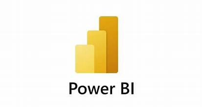

Welcome to our data cleaning project for housing data in SQL! This project is a showcase of my skills in transforming raw housing data into clean, reliable insights. Using advanced SQL techniques, I address missing values, duplicates, and inconsistencies, ensuring accurate and actionable results. Experience the power of clean data for informed analysis and decision-making.

In my COVID data exploration project, I delved into vast datasets to uncover key insights about the pandemic. Through analysis, patterns, trends, and correlations.
Welcome to my Tableau project showcase! Explore a collection of visually stunning and interactive dashboards that provide valuable insights across various domains. Witness the power of data visualization in driving informed decision-making.

In my Power BI project, I cleaned and transformed data, and created compelling visualizations. I refined the dataset by addressing data quality issues and applied various transformations to derive meaningful insights. Using a range of visualization options, I designed dashboards that effectively communicated key findings and trends.
In my Excel data analysis project, I extracted valuable insights from complex datasets through visualization, showcasing my ability to derive actionable information.